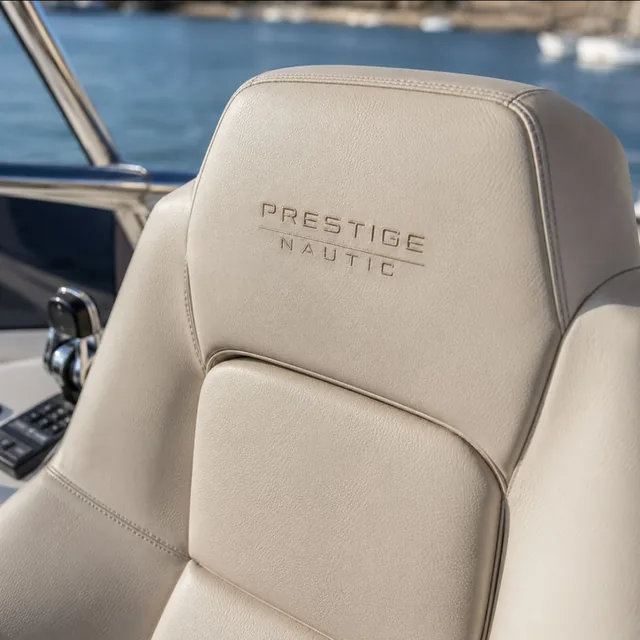
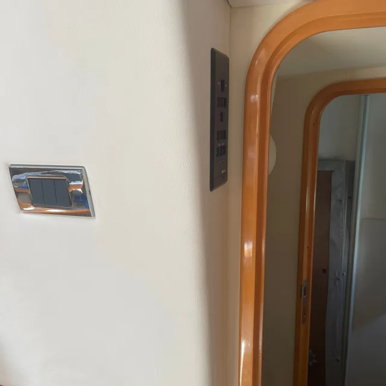

Vaigrage intérieur sur mesure pour yacht et bateau
Un intérieur transformé, silencieux et élégant. Prestige Nautic réalise votre vaigrage avec des matériaux nautiques haut de gamme, sur toute la Côte d'Azur.
Le vaigrage, qu'est-ce que c'est ?
Le vaigrage désigne le revêtement intérieur de la coque d'un bateau — les panneaux qui recouvrent les flancs, le plafond et le fond de la cabine. Il joue à la fois un rôle esthétique et technique : il habille l'intérieur du bateau tout en assurant une isolation phonique et thermique contre la coque.
Un vaigrage bien posé transforme radicalement le confort de vie à bord. Il réduit les bruits de coque, stabilise la température de la cabine et donne à l'intérieur du bateau l'aspect soigné d'un espace de vie haut de gamme.
Les bruits de coque, de moteur et de vague sont absorbés. La cabine devient silencieuse et reposante, même en navigation.
La mousse intercalaire crée une barrière thermique entre la coque et la cabine. Moins de condensation, températures stables été comme hiver.
Tissus nautiques, simili-cuir, cuir véritable, alcantara, suédine : le choix du revêtement personnalise l'ambiance de votre cabine selon vos goûts.
Chaque pièce est découpée et ajustée aux courbes uniques de votre coque. Aucun produit générique : tout est taillé pour votre bateau.
Sellerie & finitions
Le même soin que pour le vaigrage s'applique à la sellerie : matériaux nobles, coutures précises et confort à bord.


Du devis à la livraison
Le vaigrage demande une préparation minutieuse. Notre processus garantit un ajustement parfait et une finition sans défaut.
Prise de mesure et gabarit
Chaque gabarit de surface à recouvrir : flancs, plafond, parois est réalisé directement dans le bateau pour un ajustage parfait.
Choix des matériaux
Sélection du support (contreplaqué marine, mousse, coque à nu) et du revêtement de surface (tissu nautique, simili-cuir, stratifié bois) selon vos préférences et le budget.
Fabrication en atelier ou à bord
Découpe, habillage et collage selon les gabarits. Chaque pièce est conçue méticuleusement avant l'installation sur le bateau
Pose et fixation à bord
Mise en place des panneaux, ajustement fin des coupes, fixation par clips nautiques ou vissage inox selon la configuration. Les joints sont invisibles.
Finitions et contrôle final
Vérification de la planéité, des raccords et de l'étanchéité sur les zones sensibles. La cabine est livrée propre et prête à l'usage.
Tout savoir sur le vaigrage
Qu'est-ce que le vaigrage d'un bateau ?
Le vaigrage est l'habillage intérieur de la coque et des cloisons, en tissu marin, simili, cuir ou mousse technique. Il améliore l'esthétique, le confort et l'isolation phonique et thermique de l'habitacle.
Le vaigrage améliore-t-il vraiment l'isolation ?
Oui, nettement. Un vaigrage bien posé réduit la condensation, atténue les bruits de coque et stabilise la température intérieure — un vrai gain de confort, en navigation comme au mouillage.
Quels matériaux proposez-vous ?
Selon le rendu et le budget : tissus marins, simili cuir, cuir, alcantara, panneaux mousse. Tous sont sélectionnés pour résister à l'humidité et aux UV du milieu marin. Pour le détail des matériaux et des étapes de pose, consultez notre guide complet du vaigrage.
Peut-on refaire le vaigrage d'un bateau ancien ?
Oui. Refaire le vaigrage est l'un des moyens les plus efficaces de moderniser un intérieur fatigué, souvent dans le cadre d'un refit intégral.
Combien de temps dure la pose ?
Cela dépend de la surface et de la complexité (cabines, équipets, plafonds). Nous établissons un planning précis au devis pour limiter l'immobilisation du bateau.
Intervenez-vous sur mon port ?
Basés à Toulon, nous intervenons sur toute la Côte d'Azur : Hyères, Bandol, Sanary, Saint-Tropez, Cannes, Antibes, Nice et Monaco.
Un projet de vaigrage sur la Côte d'Azur ?
Rénovation ou nouvelle installation, nous transformons votre intérieur de bateau. Devis sur mesure, sans engagement.
Demander un devis gratuit